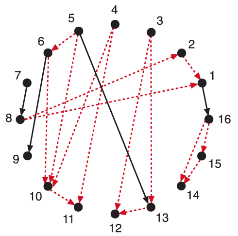
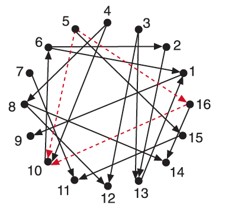

Network Motifs
Understanding Biology through Mathematics
presented by Laura Martens & Arthur Heimbrecht
Contents
Introduction
What are network motifs?
-
basic interaction patterns that recur throughout biological networks
much more often than in random networks

Real network


Random network

Network motifs as building blocks
-
Each network has a defined function: e.g. filters, pulse generators
-
Small set of network motifs serve as bulding blocks of large networks


Transcription networks
Video??
Evolution of network motifs
Biology
Buzzers, Sniffers, Switches, Blinkers
Buzzer
Nested slides are useful for adding additional detail underneath a high level horizontal slide.
Sniffers
That's it, time to go back up.
Switches
That's it, time to go back up.
Blinkers
That's it, time to go back up.
Large Networks
Logic operators
There are different ways how X and Y can be integrated to regulate the Z promoter
Two common input functions are the AND gate and OR gate.
AND Gate

OR Gate


Detection of network motifs
Theoretically and Experimentally
Finding network motifs theoretically
Algorithm to detect network motifs:
- Create a network with same number of nodes as has the real network
- Assign the same number of incoming and outgoing edges to each node
as has the corresponding node in the real network - Scan network for all possible n-node subgraphs and record the number
of occurrences of each subgraph - Compare probabilities → cut-off probability